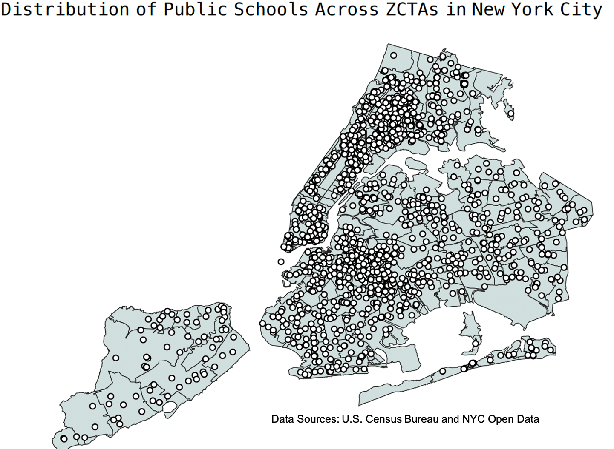

P8105 Final Project
Exploring the Potential Associations between Specialized High School Admissions Offers and COVID-19 Rates in NYC
Tanya Butt, Catherine Lucey, Irene Martinez Morata
12-10-21

Project Motivation
New York City has the largest public school system in the United States, with approximately 1 million students enrolled in public schools every year, and a notoriously complex enrollment system. At all stages of education - elementary, middle, and high school - students can apply outside of their district school, often into specialized or highly selective schools. New York is unique in that a comprehensive application for admission to a competitive, well known school can begin as early as pre-kindergarten.
The largest admissions process occurs for high school, where all eighth grade students are eligible to apply to any public high school in the city. The official DOE guide to high school admissions for 2021 splits the high school admissions process into applications for non-specialized and specialized public high schools. Eighth graders who do not enter the high school admissions process at all receive an offer from the closest high school that has an available seat.
Like school systems across the country, the New York City public school system has had its share of disruption due to the COVID-19 pandemic. The New York Times recently reported that total public school enrollment decreased significantly during the pandemic, and both students and teachers were faced with the significant hardships that came with the sudden, unprecedented shift to fully virtual learning.
Due to the major challenges posed to educational systems during the pandemic, we were curious to see if rates of COVID-19 exacerbated existing inequalities in New York’s specialized high school system. With this project, we aimed to determine whether incidence and death rates of COVID-19 at the zip-code tabulation area (ZCTA)-level were associated the number of offers made to specialized high schools in 2020.
Initial Research Questions
As the disparities prevalent in the New York City public school and health care systems have come to the fore of public discussion, we chose to explore the potential associations between the COVID-19 pandemic and specialized high school admissions.
Questions we aimed to address are:
- Were the incidence or mortality rates of COVID-19 at the ZCTA-level associated with SHSAT applicants and offers during 2020?
- Is the number of SHSAT applicants and offers in 2020 significantly different from previous years?
- At the ZCTA-level, what are the geographic distributions of COVID-19 incidence and mortality rates for 2020?
- At the ZCTA and borough levels, what is the geographic distribution of the proportion of SHSAT offers to applicants?
Data Sources and Preparation
SHSAT Admissions Test Offers by Sending School (2015-2021) Specialized high school admission offers by middle school (denoted by district borough number) was obtained from NYC Open Data.
2020 DOE Middle School Directory Addresses and key characteristics of each sending middle school were obtained from NYC Open Data
NYC COVID-19 Positive Tests by Zip-Code Weekly zip-code level SARS-CoV2 testing data was compiled for New York State beginning March 1, 2020 by the New York State Department of Health.
NYC COVID-19 Death Rates by Zip-Code Monthly zip-code tabulation area (ZCTA)-level SARS-CoV2 death rate data was obtained from the NYC Department of Health and Mental Hygiene.
Crosswalk File for Zip-Code to MODZCTA To obtain consistent area units across the datasets, we used a crosswalk file to convert zip-codes to MODZCTAs. MODZCTAs, based on the 2010 U.S. Census, are currently used by the NYC DOHMH for the mapping of COVID-19.
Why look at ZCTAs instead of zip-codes?
Using MODZCTA as our spatial level allows us to overcome several limitations of zip-code level data.A ZIP Code doesn’t refer to an area, but rather a collection of points that make up a mail delivery route. The modified ZCTA (MODZCTA) geography combines census blocks with smaller populations to allow more stable estimates of population size for rate calculations. For the COVID-19 data that we used, the MODZCTA reflects people’s residence at the time of reporting, and not the location of their COVID-19 testing, diagnosing, or hospitalization.
Methods
Data Cleaning
Data sets were extracted from the data sources mentioned above and variables of interest were cleaned for consistency and clarity. Cleaned data sets were then joined to create a single master file, which was used for subsequent visualizations and data analysis.
SHSAT Data
Though charter middle schools are included in the yearly specialized high school admissions by sending school data set, they are not included in the DOE middle school directory.
COVID-19 2020 Cumulative Indicence and Mortality Data
The COVID-19 cumulative incidence and mortality rates for 2020 were imported directly from the github repository of the NYC Department of Health and Mental Hygiene
The cumulative incidence rate data set contains the cumulative COVID-19 positive incidence rates from March 2020 until December 2020 by ZCTA. In this data set, a person is classified as a confirmed COVID-19 case if they test positive with a molecular test.This data set includes people who live in NYC. Any person with a residence outside of NYC is not included. A potential benefit of using this data set is that it excludes the “noise” from non-NYC residents who test positive for COVID-19, but do not reside in NYC.
The death rate data set contained the rate of deaths per 100,000 people, stratified by month, borough, and ZCTA. When the count of deaths is between 1 and 4, the rate is not reported due to patient confidentiality and to prevent unreliable estimates.
Visualizations
Our interactive maps can be found here.
Analysis
We used descriptive statistics to summarize the distribution of our dependent variable: the average number of SHSAT offers in 2020 by MOZCTA, and relevant predictors: the cumulative Covid-19 positive incidence rate and the cumulative death rate from March until December 2020.
We ran chi-square tests to test if there was a significant difference between the number of offers in 2020 and the average number of offers between 2015 and 2019. Additionally, we tested if there was a significant difference between the number of applicants to specialized high schools in 2020 and the average number of applicants from 2015 until 2019.
For our secondary analysis, we excluded all schools with less than 5 students receiving offers to specialized high schools to avoid positivity violations. Because our dependent variable is a count (number of offers), we used a poisson linear regression. However, because the distribution of the data was overspread, the variance did not equal the mean. To avoid the violation of this assumption, we used a Quasi-Poisson model, which assumes that the variance is a linear function of the mean. In our primary model, we calculated the change in the number of SHSAT offers by a 10% increase in the cumulative Covid-19 incidence. We progressively adjusted the model, including the total number of testers by MOZCTA. Additionally, we run a secondary model with 10% increase in the cumulative mortality rate as the main predictor.
Results
Figure 1: Understanding the Baseline Distribution of Specialized HS Admissions in New York City 
First, it is important to have a sense of how specialized high school applications process differ in in schools across the city. Here, the proportion of admissions offers to the number of students applying to specialized schools represents the “success rate” of each middle school. These data answer the question: “of the students applying to specialized schools, how many get in?” The red points are the underlying datapoints.
Overall, there is a large spread in the data: in some schools, a majority of the students applying to specialized high schools receive an offer, and in other schools, almost none of the students applying receive an offer from a specialized school. Brooklyn and Queens have the greatest range in proportion of offers to applicants, and the Bronx and Staten island consistently have a much lower “success rate” of offers per students applying. Manhattan consistently has the greatest number of offers per number of applicants. The observed trends are relatively stable across the years 2015-2020.
Figure 2: Number of Offers Before and During the Covid-19 Pandemic 
The weighted average number of offers is the number of offers per school, weighted by the number of applicants at that school, averaged within a ZCTA. Pre-covid data (2015-2019) is the weighted average number of offers per ZCTA, averaged again across the years 2015-2019. The red points are the underlying datapoints.
The weighted average number of offers seems to have stayed largely the same pre- and during the Covid-19 pandemic in the Bronx and on Staten Island, while the median weighted average number of offers for zip codes Manhattan decreased in the pandemic. In Brooklyn, there are a few ZCTAs in which students had an unusually high number of offers in 2020, though the median number-of-applicant-weighted average number of offers per Brooklyn zip code is lower in 2020 than in the preceding five years.
Descriptive statistics
The mean and the median cumulative Covid-19 positive rate across all ZCTAs were 23.85% and 24.90%, respectively. The maximum was 88.50%, and the minimum was 9.3%. The mean and the median cumulative death rate by 100,000 inhabitants were 56.31 and 53.60, respectively, the minimum was 0%, and the maximum was 160.43.
Secondary analysis
A significant difference between the number of applicants in 2020 compared to the previous 5 years was identified (p value <0.0001). However, the difference in the number of offers received during the 2020=2021 school year as compared to the previous 5 years was not significant.
In our regression models, we identified that every 10% increase in the Covid-19 cumulative incidence rate during 2020 was associated with a 0.005 decrease in the number of specialized high school admissions offers, on average, across all boroughs in New York City. This association was statistically significant with a p value <0.05. When the model was adjusted for the number of applicants during the yearm a significant reduction of 0.004 offers by a 10% increase in the cumulative incidence of Covid-19 during 2020 was observed. The model testing the change in offers associated with an increase in the mortality rate was not significant and yield estimates with a magnitude <0.0001, thus it is not shown in the table.
Discussion
In this project, we identified a significant difference in the number of testers between 2020 and the previous five years. We represented the distribution of the specialized high school admissions offers across NYC in a visually friendly manner, identifying the areas with higher proportion of offers in the borough of Manhattan. By contrast, the Covid-19 positive rate and cumulative mortality rate by 100,000 inhabitants was higher in the boroughs of Queens, The Bronx and Staten Island. We identified a significant association between an increase of Covid-19 incidence and a decrease in the number of offers by MOZCTA on average. Several mechanisms could explain this identified association. The pandemic has impacted human lives at several levels, including accessibility to education. We believe these findings remark those areas where most efforts to enhance students accessibility to education and exam preparation is needed. These preexisting disparities across neighborhoods are likely to be exacerbated by the pandemic, which not only impacts the students directly (i.e., by remote education, reduced hours of class), but also can impact their education through a negative impact on their families (i.e., loss of family members, decrease of median household income due to unemployment, or increased healthcare expenses for Covid-19 hospitalizations, among other hypothetical mechanisms).
Nevertheless, this study has a serial of limitations. First of all, given the cross sectional nature of the analysis, it is impossible to understand the direction of the association. Longitudinal studies are needed, particularly documenting the same parameters over the next years as Covid-19 infections remain an issue for the community. Additional, we excluded several schools which did not have information about their zip code or MOZCTA, moreover, we excluded all the schools with less than 5 participants to avoid non positivity violations. This could be a source of selection bias, particularly tending to exclude schools with a smaller number of students. Additionally, our regression models were not adjusted for potential confounders, which represents a major limitation for the interpret ability of this association as a potential causal effect. Nevertheless, to our knowledge, this is the first project that looked at the association between Covid-19 positivity rate and SH SAT offers during the first year of the Covid-19 pandemic. The visualization of the distribution of SH SAT offers and Covid-19 incidence an mortality, provides a useful description that allow us to identify areas where the opportunities for students to access specialized high schools are particularly low. Interestingly, these areas are those where the incidence and mortality rates are higher.
There is a need for longitudinal studies that assess this association over time, additionally, further studies should seek to include potential confounders (i.e., socioeconomic status, mental health) for the association between Covid 19 and specialized high school admissions offers.